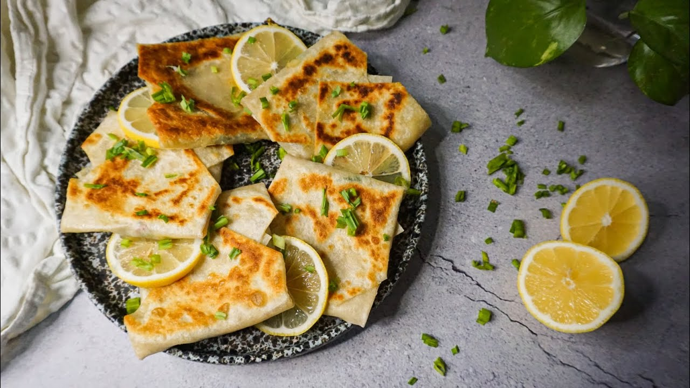

Mutabbaq Recipe
Mutabbaq Recipe

Savory Stuffed Pastry
Ingredients:
- 2 cups all-purpose flour
- 1/2 teaspoon salt
- 3/4 cup water (adjust as needed)
- 2 tablespoons vegetable oil
- 1/2 pound ground beef or lamb
- 1 medium onion, finely chopped
- 1 small tomato, finely chopped
- 2 cloves garlic, minced
- 1/2 teaspoon ground cumin
- 1/2 teaspoon ground coriander
- Salt and pepper, to taste
- 1/4 cup chopped green onions or fresh parsley
- 2 eggs, beaten
- Oil for frying
Directions:
- In a bowl, mix flour, salt, and water to form a soft dough. Knead for 5 minutes until smooth, then cover and let rest for 30 minutes.
- In a skillet, heat a little oil and cook the onion until translucent. Add ground meat, garlic, tomato, cumin, coriander, salt, and pepper. Cook until the meat is browned and fully cooked.
- Stir in chopped green onions or parsley, then let the filling cool slightly. Once cooled, add the beaten eggs and mix well.
- Divide the dough into small balls. Roll each ball into a thin square or circle on a floured surface.
- Place a spoonful of filling in the center of each dough square, fold over the edges, and press to seal, forming a square packet.
- In a large skillet, heat oil over medium heat. Fry each mutabbaq until golden brown and crispy on both sides, about 3-4 minutes per side.
- Drain on paper towels and serve hot. Enjoy this crispy, flavorful treat!